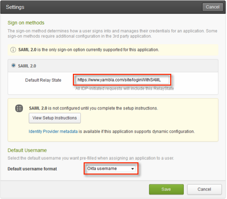

Email Yambla support to enable SAML for your account.
Copy the following IDP Metadata and paste it into the email:
Sign into the Okta Admin dashboard to generate this value.
After receiving confirmation from Yambla that SAML is enabled, in the Okta Dashboard for the Yambla application, enter https://www.yambla.com/site/loginWithSAML into the Default Relay State field, as shown below.
